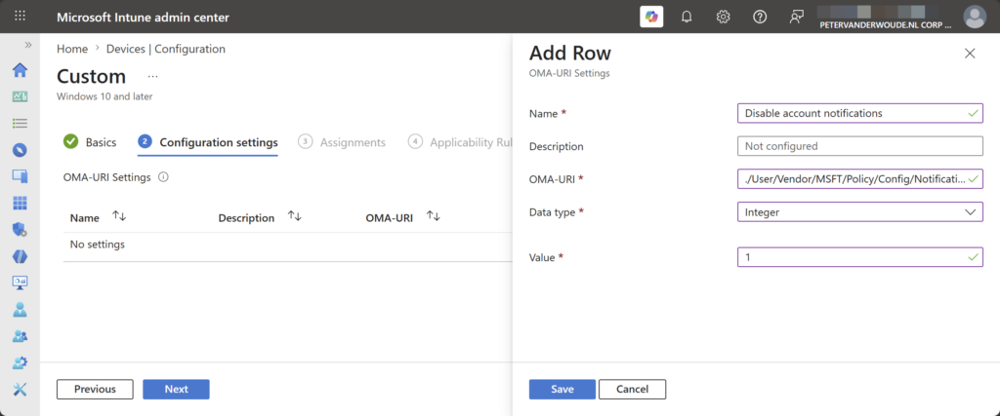
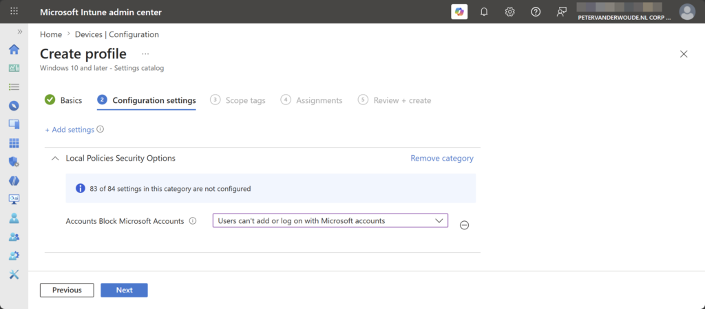
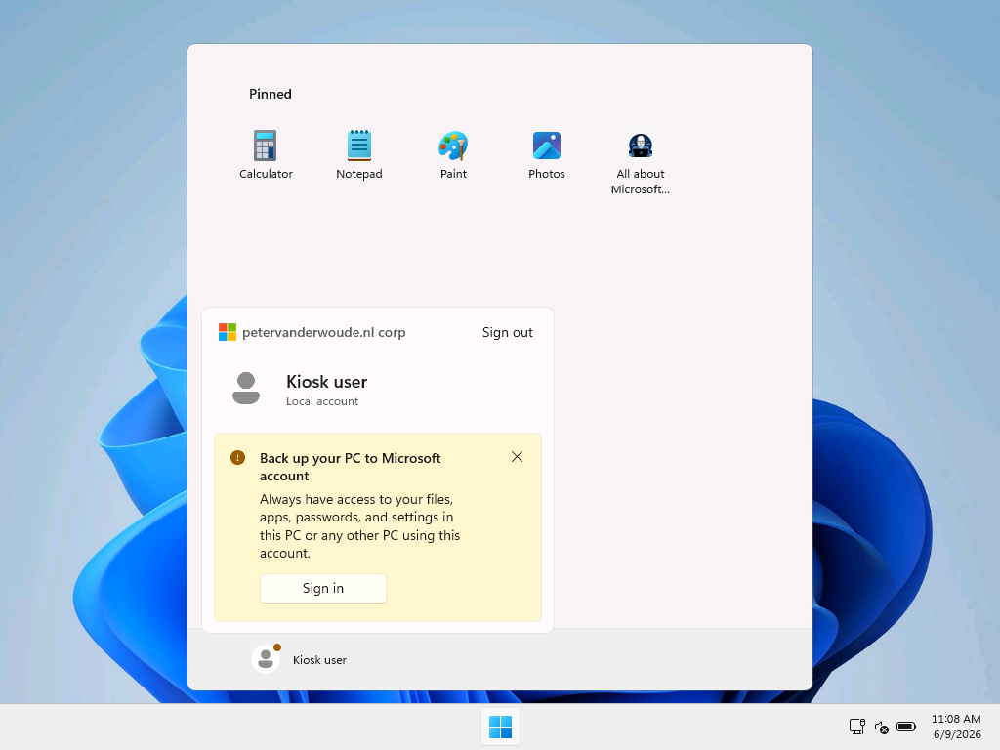
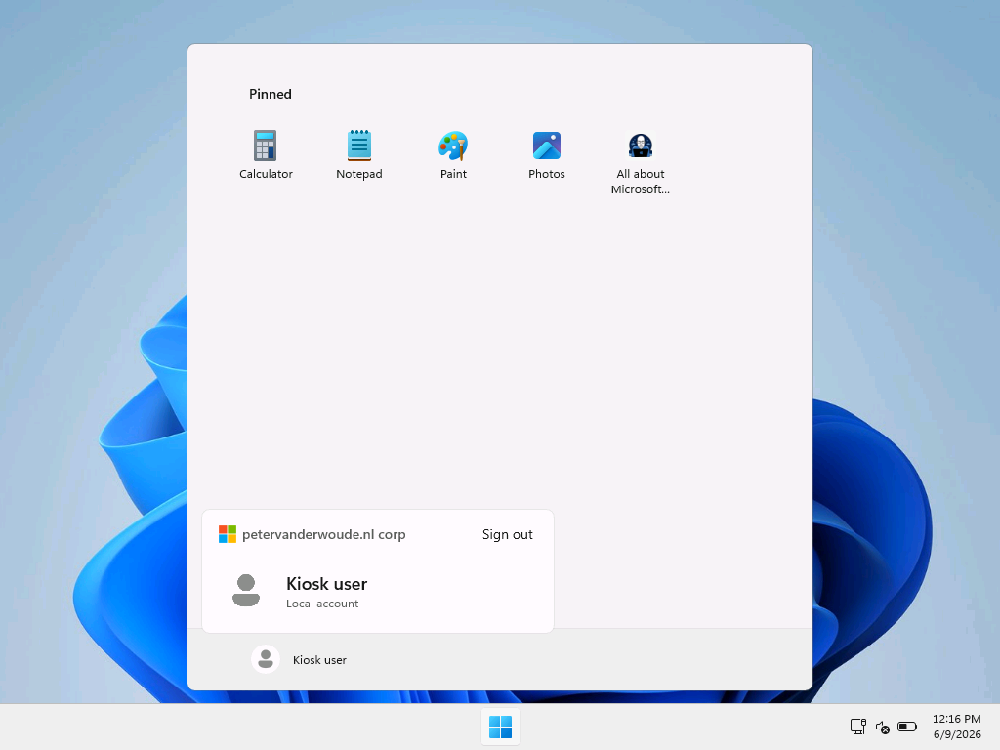

This week is also all about another relatively small, but nowadays essential, configuration to further enhance the Start layout experience. Especially when using multi-app kiosk mode with local accounts. That configuration is to turn off account notifications for Microsoft accounts (MSA) and local users in the user tile of Start. Turning off account notifications is especially relevant when using multi-app kiosk mode with local accounts, as that includes getting users to sign with a Microsoft account to backup their device, to manage cloud storage quotas, and more. Those account notifications might trigger users to perform actions that do not belong on managed devices and that are not available. Especially not on kiosk devices. It is actually pretty strange that those account notifications show on managed devices, especially after already turning of the consumer experiences. That means that there are definitely scenarios in which it is useful to turn off account notifications. This post will provide a closer look at turning off account notifications and experiencing that in multi-app kiosk mode.
Configuring turning off account notifications
When looking at turning off account notifications in the user tile of Start, there are actually multiple configurations to look at. After introducing the new behavior, Microsoft also introduced a specific policy setting to address that behavior. That policy could be the first option to look at. The second option is to just completely block the usage of Microsoft accounts.
Option 1: Turning off account notifications
The first option is the Turn off account notifications in Start policy setting that was specifically introduced to address this behavior. The values are pretty straightforward, as it can be configured to Disabled (0) or Enabled (1). The only detail is that the setting is only available in the user scope, which can be challenging with local accounts. That setting is available via the Policy CSP as an ADMX-backed setting, as it relies on the AccountNotifications.admx. It is, however, not available via the Settings Catalog at this moment. That means that the configuration still relies on using Custom configuration profiles. The following nine steps walk through the configuration of turning off notification in the user tile in Start.
- Open the Microsoft Intune admin center navigate to Devices > Windows > Configuration
- On the Windows | Configuration blade, click Create > New policy
- On the Create a profile page, select Windows 10 and later > Templates > Custom and click Create
- On the Basics page, provide a unique Name to distinguish the profile from other custom profiles and click Next
- On the Configuration settings page, as shown below in Figure 1, click Add to add the following row and click Next
- OMA-URI setting – This setting is used to turn off notifications in the user tile in Start
- Name: Provide a name for the OMA-URI setting to distinguish it from other similar settings
- Description: (Optional) Provide a description for the OMA-URI setting to further differentiate settings
- OMA-URI (1): Specify ./User/Vendor/MSFT/Policy/Config/Notifications/DisableAccountNotifications
- Data type (2): Select Integer as value
- Value (3): Specify 1 as value
{kind=link}

- On the Scope tags page, configure the applicable scopes and click Next
- On the Assignments page, configure the assignment for the required devices and click Next
- On the Applicability rules page, configure the applicability rules, and click Next
- On the Review + create page, verify the configuration and click Create
Note: The challenge with local accounts is that the policy does not always applies to all users. This only works when there are also Entra accounts logging on to the device and successfully applying the configuration.
Option 2: Completely blocking Microsoft accounts on the device
The second option is the Accounts Block Microsoft Accounts policy setting that was already introduced in the early days of Windows 10. That setting can be used to prevent users from adding Microsoft accounts on the device and is available via the Policy CSP. The available values are pretty straightforward, as it can be configured to Disabled (users will be able to use Microsoft accounts with Windows) (0), Enabled (users can’t add Microsoft accounts) (1), or Users can’t add or log on with Microsoft accounts (3). Luckily, the configuration is also pretty straightforward, as the setting is available within the Local Policies Security Options category in the Settings Catalog. The following eight steps walk through the configuration to prevent users from adding Microsoft accounts, and with that prevent notification around Microsoft accounts.
- Open the Microsoft Intune admin center portal and navigate to Devices > Windows > Configuration profiles
- On the Windows | Configuration profiles blade, click Create > New Policy
- On the Create a profile blade, select Windows 10 and later > Settings catalog and click Create
- On the Basics page, provide at least a unique name to distinguish it from similar profiles and click Next
- On the Configuration settings page, as shown below in Figure 1, perform the following actions and click Next
- Click Add settings, navigate to Local Policies Security Options and select Accounts Block Microsoft Accounts in Settings picker
- Select Users can’t add or log on with Microsoft accounts with Accounts Block Microsoft Accounts to completely block the usage of Microsoft accounts
{kind=link}

- On the Scope tags page, configure the required scope tags and click Next
- On the Assignments page, configure the assignment for the required user or devices and click Next
- On the Review + create page, verify the configuration and click Create
Note: This configuration will block Microsoft accounts completely, which is actually perfect on multi-app kiosk devices.
Experiencing turning off account notifications
After applying the configuration of turning off account notifications from the user tile in Start, experiencing the configuration is pretty straightforward. For the best overview it is probably the best and easiest to show a before and after. When creating a multi-app kiosk mode with a local user account, it will by default eventually show a red dot with the user icon. Opening the user tile will show a message that would trigger the user to try and sign in with a Microsoft account. That breaks the user experience. That is the main reason why that section is better left out on multi-app kiosk devices. Below in Figure 2 and Figure 3 is an overview of the before and after situation, when using the provided configuration. Pretty straightforward and nice and clean.
{kind=link}

{kind=link}

More information
For more information about managing notifications, refer to the following docs.
Discover more from All about Microsoft Intune
Subscribe to get the latest posts sent to your email.